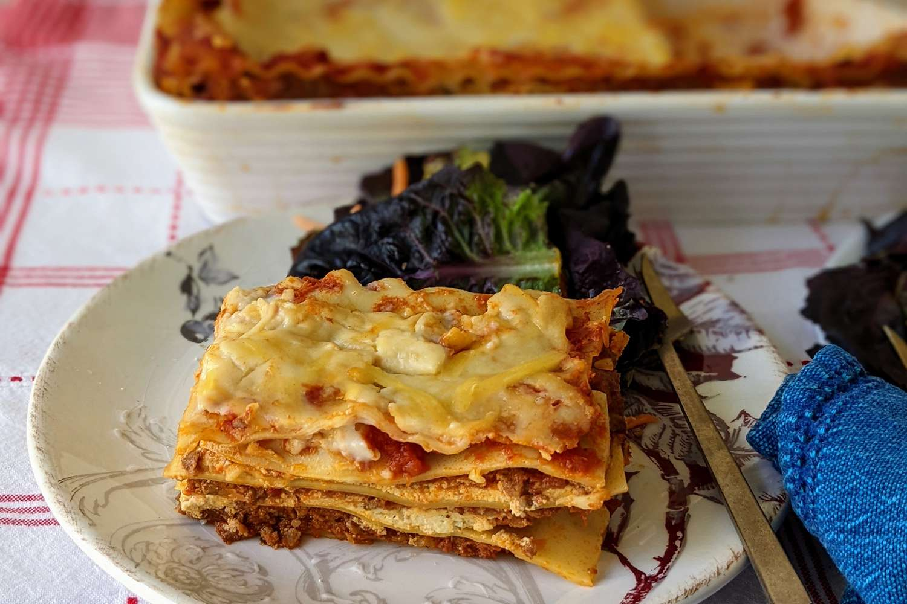

Lasagna

Description
This is some goofy lasagna recipe I pulled off of Allrecipes.
I'll probably never try it, but you could give it a go. Maybe
it is a certified banger, maybe it isn't, you'll have to find out.
Give this bad boy a go. I know I'm too lazy to.
Ingredients
- Half a pound of groudn pork
- Half a pound of lean ground beef
- Half a cup minced onion
- 1 (28 ounce) can crushed tomatoes
- 1 (8 ounce) can tomato sauce
- 2 tablespoons chopped fresh parsley, divided
- 1 clove garlic, crushed
- 1 and a half teaspoons dried basil
- 1 and a half teaspoons of salt
- Half a teaspoon dried oregano
- An eigth teaspoon of white sugar
- 1 (16 ounce) package of lasagna noodles
- 1 pound small-curd cottage cheese
- Three quarter cup grated parmesan cheese
- 3 large eggs
- 2 teaspoons salt
- Quarter teaspoon ground black pepper
- 1 (16 ounce) package shredded mozzarella cheese
Steps
- Gather all ingredients.
-
Combine pork and ground beef in a large, deep skillet over
medium-high heat; cook and stir until browned and crumbly,
5 to 7 minutes.
-
Add onion and cook until translucent, about 5 minutes.
-
Stir in crushed tomatoes, tomato sauce, 1 tablespoon fresh
parsley, garlic, basil, salt, oregano, and sugar. Reduce heat
to medium-low and simmer, stirring occasionally, for 30 minutes.
-
While the sauce is simmering, bring a large pot of lightly
salted water to a boil. Cook lasagna noodles in the boiling water,
stirring occasionally, until tender yet firm to the bite, 8 to 10
minutes. Drain and set aside. While noodles are cooking, preheat
the oven to 375 degree F (190 degrees C).
-
Mix cottage cheese, Parmesan cheese, eggs, remaining tablespoon
fresh parsley, salt, pepper in a large bowl until combined.
-
Assemble lasagna: Spread a spoon or two of sauce over the bottom
of a 9x13 inch baking dish just to coat it. Place two layers of
noodles over the sauce to cover.
-
Layer with half the cheese mixture, half the remaining sauce, and
half of the mozzarella cheese. Repeat layers once more using the
remaining noodles, cheese mixture, sauce, and mozzarella. Cover
the baking dish with aluminum foil.
-
Bake in the preheated oven for 30 to 40 minutes. Remove the foil
and bake until the cheese is golden brown, 5 to 10 more minutes.
-
Remove from the oven and let stand for 10 minutes before cutting
and serving.
Home